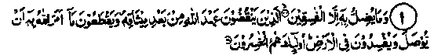
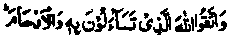
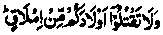
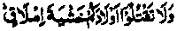
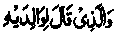
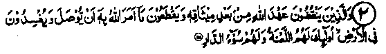
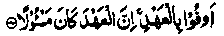
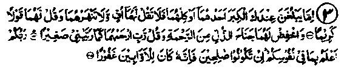

Chapter Three · Section (c)
Section (c)
Ayaat on Retribution for Severing Family Bonds

1. And He misleads thereby only miscreants. Those who break the covenant of Allah after ratifying it, and sever that which Allah ordered to be joined, and (who) make mischief in the earth. Those are they who are the losers. (al-Baqarah: 26-27).
Note: Just Allah Ta'ala has ordered kindness towards the kith and kin, especially the parents, at several places in the Qur’an, similarly He has also warned repeatedly against the severing of connections with the relatives, particularly with the parents. A reference is made to a few Ayaat in that context, as has been done earlier under Ayat 1, in the beginning of this chapter, for the sake of drawing attention to this and to bear them in mind. Allah Ta'ala says:-

Be careful of your duty toward Allah in Whom ye claim (your rights) of one another, and toward the wombs (that bare you). (an-Nisaa: 1).

And that ye slay not your children because of penury. (al-An’am: 151).

Slay not your children, fearing a fall to poverty. (Bani-Israel: 31).

And whoso saith unto his parents: Fie upon you both! Do ye threaten me that I shall be brought forth (again) when generations before me have passed away? And they twain cry unto Allah for help (and say): Woe unto thee! Believe! Lo! the promise of Allah is true. But he saith: this is naught save fables of the men of old. (al-Ahqaf: 17).
Would ye then, if ye were given the command, work corruption in the land and sever your ties of kinship? (Muhammad: 22).
Mohammad Baqir Rahmatullah alaihe was given a strong advice by his father, which has been quoted under Hadith No. 23 in the first Chapter-and is based on sound experience. He narrates that his father, Zain-ul-Aabideen Rahmatullah alaihe advised him as follows: "Avoid the company of five types of people, do not talk to them, never walk with them, if you come across one of them by chance. Those five are: first an immoral person who will sell you for a morsel of bread, or even for less". When asked how could anyone sell a person for less than a morsel, he replied, "He will do so in hope of receiving a morsel, which he may never get". The next one is a miser who will forsake you in your time of need. The third is a liar who is a cheat; he will deceive you by making you believe the far off thing to be near and the near one to be far off. The fourth is a stupid person, who is to be shunned for fear of causing you harm when he intends to do good to you, as it is said that a wise enemy is better than a foolish friend. The fifth is the one who breaks away from his kith and kin, as the curse of Allah descends upon him, as has been mentioned at three places in the Holy Qur’an.

2. And those who break the covenant of Allah after ratifying it; and sever that which Allah has commanded to be joined, and make mischief in the earth: theirs is the curse and theirs the ill abode, ar-Ra‘d:25).
Note: Qatadah Rahmatullah alaihe has advised being extra careful in guarding against breaking an agreement, for that incurs displeasure of Allah. There are more than twenty Ayaat containing Allah Ta'ala’s admonishment and threats of severe punishment for breach of a ratified agreement The author believes that Allah Ta'ala has not admonished so many times on any other matter. Therefore, a person must fulfil an agreement under all circumstances. Anas Radhiallaho anho reports Rasulullah Sallallaho alaihe wasallam as saying, He who is not trustworthy has no faith (Imaan) and he who does not fulfil his promises has no religion!" Abu Umamah and Ubadah Radhiallaho anhuma have also made the same comment (Durre Manthur). Maimoon Bin Mehraan Rahmatullah alaihe has said that there are three orders which make no distinction between a Muslim and a non-Muslim; First, an agreement must be fulfilled, be it with a Muslim or a non-Muslim, because, in fact it amounts to a vow with Allah Ta'ala. Secondly, a kinship must be upheld, whether it is with a Muslim or a non-Muslim. Thirdly, a property held in trust must be returned, whether the owner of the trust is a Muslim or a non-Muslim.
There are several Ayaat in the Qur’an regarding fulfilment of covenants, one of which is:-

"Fulfil the trust, you will be called to account for it". (Bani Israel: 34)
Qatadah Rahmatullah alaihe has said that the order about maintenance of kinship concerns both the near and distant relatives. The other warning in the Ayat is about breaking relationship. Umar Ibne Abdul Aziz Rahmatullah alaihe has said that one should not associate with a person who causes breach of relationship between kith and kin, as he found a curse on him at two places in the Holy Qur’an: one, in the above Ayat and the other in Surah Muhammad. The reference in Surah Muhammad has already been indicated in a preceding paragraph, where it has been said, in the context to breach of relationship, that they are the people who have been cursed by Allah Ta'ala and they have been made deaf, (cannot listen to Allah’s commandments) and blind (that they cannot see the path of righteousness). While Umar Ibne Abdul Aziz Rahmatullah alaihe has mentioned the curse in two places. Zainul Abideen Rahmatullah alaihe has pointed out three places. Two are as above, in Surah Ra‘d and Surah Muhammad, while in the third place, he is called ‘a loser’ and ‘one gone astray’ which is close to being called an accursed person, as mentioned earlier in the Ayat from Surah Baqarah.
Salman Radhiallaho anho has quoted Rasulullah Sallallaho alaihe wasallam as saying that, when words abound and practice is locked up in a treasury (that is, plenty of speeches and elaborate writings, but not followed by actions), such an approach creates agreement in words but hearts remain opposed and there is discord and breach of kinship. In that event, Allah Ta'ala deprives people of His mercy and blessings and makes them blind and deaf. Hasan Radhiallaho anho has also quoted Rasulullah Sallallaho alaihe wasallam as saying that, when people display their knowledge but have no deeds, and show love verbally while having malice in the hearts and no regard for the kith and kin, Allah Ta'ala drives them away from His kindness and mercy, wherefore, they are unable to see the path of righteousness or what is right or wrong. One Hadith says that the fragrance of Jannah spreads upto a distance covered in five hundred years, but the one who remains disobedient to his parents and disregards kinship will never be able to experience the sweet smell of Jannah.
Abdullah Ibne Abi Aufa Radhiallaho anho has said that once, in the evening on the day of Arafah, we (the Sahabah) were sitting around Rasulullah Sallallaho alaihe wasallam. He announced, "Any one who has broken his relationship with any of his kin, should leave the company and not sit with us!" Only one man sitting at a great distance got up and went way. After a while, he returned and joined the assembly. Rasulullah Sallallaho alaihe wasallam asked him how only he had left the company after his statement The man said that, after hearing the order, he went straight to his aunt who had broken her relationship with him. On seeing him she asked how it was that he had come to her against his normal practice. He repeated to her the order of Rasulullah Sallallaho alaihe wasallam, on hearing which, she made a Du'aa of forgiveness for him and he made a similar Du'aa for her and thus they were reconciled with each other. Rasulullah Sallallaho alaihe wasallam was greatly pleased with him, allowed him to rejoin the company, then said that Allah Ta'ala does not grant His blessings or a community among whom there is some one who has broken away from his relations.
This Hadith has been quoted by Faqeeh Abul Laith Rahmatullah alaihe, who says that damaging kinship is so grave a sin that, even by sitting with a person guilty of such a sin, one is deprived of the blessing of Allah Ta'ala. It is essential, therefore, that anyone who is involved in such a situation, must seek forgiveness of Allah Ta'ala and build up his relationship with his kith and kin. Rasulullah Sallallaho alaihe wasallam has said that there is no good deed the reward of which comes faster, than being good to one’s kith and kin; and there is no sin greater than the breach of kinship and cruelty in respect of punishment in this life and in Akhirah. Several Traditions indicate that the punishment for breach of kinship is experienced even in this life, and in the life of Akhirah,as evident from the above Ayat Faqih Abul-Laith Rahmatullah alaihe has mentioned a rare story about a very pious and honest man from Khurasan who used to live in Makkah Mukarramah. People used to leave their property as a trust with him. Once, a person left ten thousand Dinars as a trust with him and went away on a journey. When that person returned, the Trustee had died, so the person made enquiries from the family of the deceased but no one knew anything about it. As a large sum of money was involved, the owner asked a gathering of Ulama in Makkah as to what he should do. They told him that the Khurasani was a very pious person who must be in Jannah. The owner should visit the Zainzam well after midnight and call the name of the Trustee, asking him about his money. The owner repeated the process for three nights running, but received no reply. He went back to the Ulama and told them about his efforts. They were surprised and recited:
They were afraid lest he should not be in Jannah. So, they advised him to visit a certain place where he would find a valley by the name of Barhoot and, in it, a well. He should make a loud call into the well. He did so and received a reply after the very first call, that his money was safe; not trusting his children, he had buried it in such and such place inside the house and the person should ask his son to show him that place, where he should dig his money out The man did so and got back his wealth. He, however, in astonishment, asked the deceased how he was in such a place in spite of being a pious person. The deceased told him that he had some relatives in Khurasan, with whom he had broken his relationship and had died without mending it, which had become the cause of his punishment.
Ali Radhiallaho anho has said, "The best of all valleys is the Valley of Makkah Mukarramah ,and that valley in India where Adam Alaihissalam was brought down from Jannah, where all the fragrances are, which people use. The worst of valleys are the Ahqaf and the Hazarmout, known as Barhoot. The best of all the wells is the Zamzam and the worst of all is the Barhoot well where all the spirits of non-believers are kept". But the incident related above is an instance of Divine manifestation (i.e. Allah Ta'ala manifesting to a saintly being, a supernatural phenomenon that transcends the conceivable or rational). Obviously, such manifestations have no dogmatic value.

3. If one of them or both of them (parents) attain old age with thee, say not 'Fie" unto them (anything which may upset or put them to shame) nor repulse them, but speak unto them a gracious word. And lower unto them the wing of submission through mercy, and say: My Lord! Have mercy on them both, as they did care for me when I was little. Your Lord is best aware of what is in your minds. If you are righteous, then lo! He was ever forgiving unto those who turn (unto Him)". (Bani Israel: 23,24, 25).
Note: Mujahid Rahmatullah alaihe has said, in the explanation of this Ayat that when the parents become aged you aught not to grumble over washing their urine and excreta, as they washed it when you were a baby. Ali Radhiallaho anho has said that if there were any degree of disrespect below uttering "Uff", Allah Ta’ala would (probably) have forbidden it When someone asked Hasan Radhiallaho anho as to what was the lowest degree of disrespect the reply was, To deprive them of the benefit of your property and wealth, avoiding to see them and looking at them with sharp looks." Another person asked Hasan Radhiallaho anho as to what the ‘Qaule Karim’ (gracious word) meant he replied, "To address them lovingly as ’Mummy and Papa’ and to avoid calling them by their names" Zubair Ibne Muhammad Rahmatullah alaihe has been quoted to explain that whenever they call you, reply, "Present sir". Qatadah Radhiallaho anho has said that they should be spoken to politely. Someone asked Sa-eed bin Musayyab Rahmatullah alaihe that the Qur’an repeats many times the order for good conduct which is understandable, but the meaning of ‘Qaule Karim’ is not clear. The reply was that it means the way a slave, guilty of a grave offence, speaks to his master who has a harsh temperament
Aishah Radhiallaho anha has said that a person accompanied by an old man, came to Rasvlullah. He asked who the old man was? The man said that he was his father. Rasulullah Sallallaho alaihe wasallam told the man, "Do not walk in front of him, do not sit down before he takes his seat, do not call him by his name and never talk to him impolitely". Urwah Rahmatullah alaihe was asked by someone what is meant when the Qur’an says, ‘Lower unto them’? The reply was that, if and when they speak to you unpleasantly, do not look at them angrily, as the dislike first becomes apparent in the eyes. Aishah Radhiallaho anha quoted Rasulullah Sallallaho alaihe wasallam as saying, "Whoever looks at his father angrily, he is being disobedient". Abdullah Ibne Mas‘ud Radhiallaho anho has said that once he asked Rasulullah Sallallaho alaihe wasallam as to what was the most acceptable deed in the eyes of Allah Ta‘ala. Rasulullah Sallallaho alaihe wasallam said, ‘Salaat offered on its right time’. He then asked What came next? The reply was, "Good behaviour towards parents". He again asked, "What came next?" The reply was "Jehaad". Another Hadith says that the pleasure of Allah Ta'ala lies in the pleasure of the father and Allah’s displeasure is caused by the father’s displeasure.
The writer of Mazahir has written that it is the children’s obligation to be humble, to show love and so serve their parents that the latter remain pleased with them, always to obey them in rightful actions, never to be impolite or treat them arrogantly, even if they happen to be non-Muslims, nor to raise their own voice above their parents or to call them by name, not to precede them in any action and, if non-Muslims, to be polite in calling them to good deeds and to prevent them from committing sins; even if they do not accept your advice, still continue to be good to them and keep praying for them, seeking forgiveness of Allah Ta'ala on their behalf. This last is evident from the Holy Qur’an: in Surah Maryam, we are told that Ibrahim Alaihissalam gave good advice (Da’wah) to his father once and then said to him, "I shall offer Du’aa to Allah Ta'ala for you".
Some Ulama have stated that obedience to parents regarding forbidden things is not permissible, but in doubtful matters, it is obligatory to obey them, bearing in mind that ‘Taqwa’ and the need to be good to them are both essential. For example, if their food is of doubtful nature and your refusal to eat with them might injure their feelings, you should eat with them.
Ibne Abbas Radhiallaho anho has said that two doors of Jannah will remain open for every Muslim whose parents are alive and he serves them well, while if he keeps them unhappy, Allah Ta'ala will not be pleased with him until they are pleased with him. Someone asked, "What if they are cruel to me? "Ibne Abbas Radhiallaho anho replied, "Even then you must remain good to them." Talha Radhiallaho anho has said that once a man came to Rasulullah and requested permission to go for Jehaad. Rasulullah Sallallaho alaihe wasallam asked if his mother- was alive; he replied that she was. Rasulullah then told him to persist in serving her well, as Jannah is under the mother’s feet. Rasulullah Sallallaho alaihe wasallam repeated this a second time, even for the third time. Anas Radhiallaho anho has said that once a man came to Rasulullah and stated his great desire to go for Jehaad, but added that he had no means for doing so. On being asked if any one of his parents was alive, he replied that his mother was alive. Rasulullah Sallallaho alaihe wasallam then said, "Fear Allah Ta'ala in her regard"; meaning, be careful in fulfilling your obligations towards her, up to the level of Taqwa and when you attain that, you will be considered as the one who has performed Umrah and Hajj, and also participated in Jehaad That is, you will receive whatever reward is earned from all these things.
Muhammad Ibne Almunkadir Rahmatullah alaihe has said "My brother Umar used to spend the whole night in praying, while I used to spend the night in massaging my mothers feet and never felt .envious of his nightlong prayers, nor desired to exchange his reward with mine". Aishah Radhiallaho anha has said that she asked Rasulullah Sallallaho alaihe wasallam "Of all the obligations of a woman towards other people, which one is the greatest?" He replied, 'The one she owes her husband". She then asked who came next and Rasulullah Sallallaho alaihe wasallam replied, "Her mother". A Hadith says "Remain chaste in respect of other people’s women-folk, then your own women will be chaste; if you remain good to your own parents, your own children will be good to you." (Durre Manthur)
Taaous Rahmatullah alaihe has said that a certain person had four sons. He fell ill. One of his sons told the other three that if they were prepared to nurse the father in his sickness, he would take the whole of his father’s property; and, if they wanted the whole property, he was prepared to nurse him without any claim on the property. They agreed to the second course and left the nursing to him. He looked after the father most admirably until the father died. As agreed, he did not take anything from the property. He saw in a dream, one night, a person telling him that one hundred Dinaars (gold pieces' were buried at such and such place, which he could take. He asked the person if that money was blessed. The reply was, "No»it is not so". He related the dream next morning to his wife, who insisted that he should take the money but he did not agree. He dreamt again the following night and someone told him about ten Dinaars lying buried at a certain place. When he again asked if they were blessed, the reply was in the negative. He related the dream to his wife next morning, who insisted that he should go and take them, but he refused to do so. He saw in a dream, the third night, someone telling him that a single Dinaar was lying at such and such place, he should go and take it. He again asked if it was a blessed one. The reply was, "Yes, it is". So, he went and took the Dinaar, purchased two fish with it and brought them home. When cut open for cooking, an invaluable pearl was found in the stomach of each fish. Both these pearls were sold to the king of the country in return for ninety mule-loads of gold.